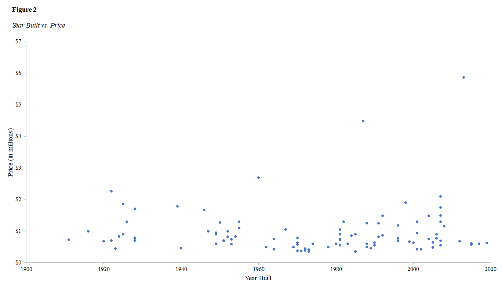
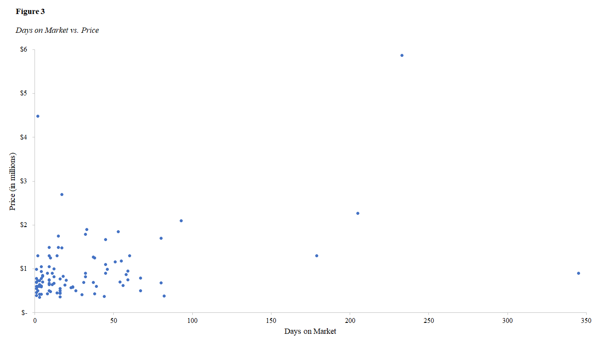
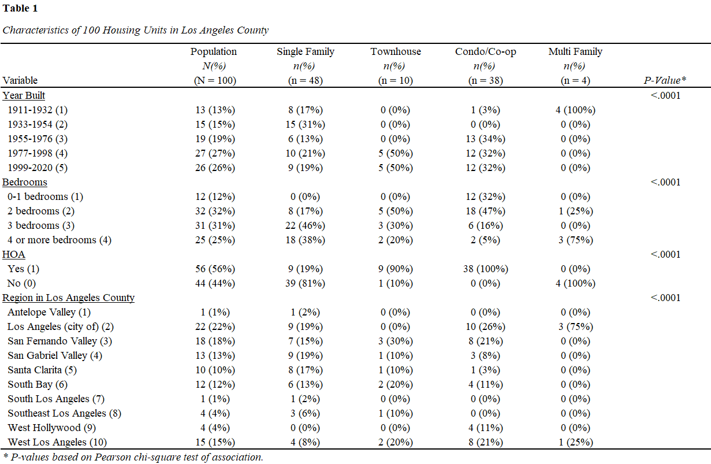
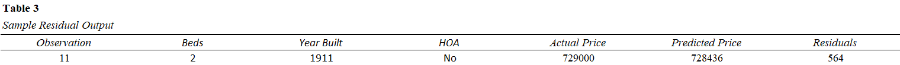

Abstract
Real-estate market dynamics in Los Angeles County affect the decision-making framework of all stakeholders involved in the buying or selling process. For first time home buyers and realtors looking to expand their market reach, the methodologies presented in this paper add value to this important endeavour. Leveraging exploratory data analysis lends itself to comparative metrics between prices and home characteristics not limited to size and year built and expanding into specific characteristics that portray relationships between all variables of interest. To establish and understand these key performance indicators (KPIs) from a selective sample, a reproducible, excel-based model is produced. Limitations are discussed based on the sample size, and suggestions are made for further refinement while utilizing other sampling methodologies and software packages.
Real Estate Prices in Los Angeles – A Case Study from Redfin
There are several stakeholders involved in the real-estate decision-making framework. Real-estate corporations and individual decision makers alike are often tasked with resolving where and what to buy as they partake in their search for single family housing properties. However, the area of focus must be narrowed to accommodate the vast opportunities, yet, relative to what is of interest. This carefully selected dataset is comprised of the specific geographic region of Los Angeles County in Southern California. The records presented herein are sourced from Redfin as opposed to other real-estate resources due to the ease of public access for MLS (Multiple Listing Service) properties. This dataset is represented by a flat .csv file, which has been downloaded at a static moment in time, on September 14, 2020; nonetheless, all of the relevant parameters in helping to establish trends in the Los Angeles Housing Market are contained herein. These parameters serve to identify patterns between price, housing type, and location, to name a few variables of interest. Considerations are made for the sample size as the first 100 listings are examined, thereby extracting an appropriate sample for the ensuing analysis. Establishing pricing patterns by location and disposition of home will be of great benefit to the stakeholders involved.
For example, a realtor might leverage this analysis to target specific zip codes with higher mean home prices. This action could potentially benefit the realtor visa vie an increase in commission from sales. The consumer, on the other hand, may trade neighbourhood (zip code) for affordability. One such variable versus another only sheds light on a particular relationship. For this reason, additional variables will be considered. Furthermore, one may look at the year that a house was built as a strategic advantage or disadvantage. This paper aims to examine these independent (predictor) variables against the dependent variable of price. In so doing, if a strong correlation exists, the model can prove to be beneficial and hold merit.
A similar study has been conducted where “home values vary across neighbourhoods. This implies that certain neighbourhood characteristics are more desirable than others” (Hipp & Singh, 2014, p. 254). The goal of the research was to determine if there was a relationship between “New Urbanism—population density, older homes, a lack of concentration of single family units” (Hipp & Singh, 2014, p. 254). Additionally, the research examined the Playa Vista Community, attributing revitalization to new infrastructure and addition of important technological companies like Youtube, Microsoft, and Fox Sports (Hipp & Singh, 2014, p. 258). Moreover, this study incorporated a similar dependent variable of home price (Hipp & Singh, 2014, p. 260). In a comparable study, analysts examine “how the housing market will function in the post housing market bubble decade. It is a useful time to take another look at how the housing market behaves and what underpins housing prices” (Clark, 2011, p. 1).
Exploratory Data Analysis
Figure 1 confirms that in the location and dispersion of prices, certain disparities exist.

Note. Prices are reflected in millions and show five of the most important summary statistics.
The median house price is 742,450, while the minimum housing price is 350,000. The average house price is 946,246.46. With a standard deviation of approximately 761,458.87, it is rather surprising that some homes exceed the mark by several million dollars. One such example is the maximum home price in this sample associated with a property in Malibu, retailing for 5.87 million. Since such a large range between data points in price exists, other variables of interest will be examined to establish relationships as they arise.
In Figure 2, most of the data points are visually scattered between one to two million dollars in a flat, nonconsequential way. Where one would expect to see an increase in price with a respective increase in the modernity of construction, this is not the case. There exist a few noticeable outliers that create somewhat of a resemblance to a positive correlation. However, such a pattern cannot be recognized or established mathematically. The plot does not show a significant relationship between the year that the house was built and its resulting price. Hence, a strong linear relationship does not exist.

Note. The year built is loosely correlated with price (at best), offering no significant association.
Conversely, Figure 3 illustrates that the relationship between days on the market and price is stronger, suggesting that a stronger linear relationship and positive correlation exist. As the number of days that a property stays on the market increases, a similar increase is witnessed in price. Days on market (or DOM as abbreviated by realtors) is “the number of days from the date on which the property is listed for sale on the local brokers’ multiple-listing services (MLS) to the date when the seller has signed a contract for the sale of the property” (Geffner, 2017). Moreover, this scatterplot illustrates that most of the properties in this sample remain listed for up to 100 days. Four properties stayed on the market from 179 – 345 days. These are the outliers. Though a positive correlation exists, there are several different factors that can affect the number of days that a property remains on the multiple-listing services (MLS), directly impacting sales price. For example, “when buyers notice your home’s above-average DOM, they’ll wonder what’s wrong. The question typically has three answers: price, condition, or location” (Geffner, 2017).

Note. Days on market has a more substantial positive relationship with price.
\[ \text{Price} = \beta_0 + \beta_1 \text{Year_Built} + \beta_2 \text{Bedrooms} + \beta_3 \text{HOA(Y|N)}} \]
Generalized Linear Model (GLM)
\[\begin{align*}
\text{Price} =\beta_0 + \beta_1\text{Year_Built}\begin{pmatrix}
1 = (1911 - 1932)\\
2 = (1933 - 1954)\\
3 = (1955 - 1976)\\
4 = (1977 - 1998)\\
5 = (1999 - 2020)
\end{pmatrix} +\beta_2\text{Bedrooms}\begin{pmatrix}
1 = (1911 - 1932)\\
2 = (1933 - 1954)\\
3 = (1955 - 1976)\\
4 = (1977 - 1998)\\
5 = (1999 - 2020)
\end{pmatrix}
\\
\\+\beta_3\text{HOA(Y|N)} +\beta_4\text{Region_in_LA_County}\begin{pmatrix}
1 = Antelope~Valley\\
2 = Los~Angeles~County\\
3 = San~Fernando~Valley\\
.\\
.\\
.\\
10 = West~Los~Angeles
\end{pmatrix}
\\
\\+\beta_5\text{Housing_Type}\begin{pmatrix}
1 = SingleFamily\\
2 = Townhouse\\
3 = Condo/Co-op\\
4 = Multi-Family\\
\end{pmatrix} + \varepsilon \end{align*}\]
where
\(\small\ Price\) is the variable of interest (the dependent variable);
Independent variables: \(\small\ Year\_Built, \small\ Bedrooms, \small\ Region\_in\_LA\_County, \small\ Housing\_Type\)
\(\beta_0\) is the intercept, or constant offset term;
\(\beta_{(1~to~i)}\) is the regression coefficient; and
\(\varepsilon\) is the error factor associated with each regression coefficient.
In this generalized linear model, price (y) is dependent on the year built, bedrooms, region in LA County, and housing type (ranked by impact). Year built has a higher positive correlation with price; newer homes are “selling at higher prices than those that were built in the past” (Manausa, 2012). The Region in Los Angeles County is of a more categorical nature.
Table 1 represents the characteristics by housing type (single family, townhouse,
condo/co-op, and multi-family) for the sample population (n = 100).

Note. This table shows statistical significance between the variables of interest and housing type at an α level of .05 (p < .0001).
Proportionally, 48 of these 100 homes sampled from the redfin dataset are single family. ten of them are town homes. 38 are condo/co-ops, and four are multi-family housing units. Of the 100 sampled herein, 13% of these homes were built between the years of 1911-1932. 15% were built between 1933-1954. 19% were built between 1955-1976. However, more than half of these homes (53%) were built between 1977-2020. Notwithstanding, 31% of single-family homes were constructed between 1933-1954. The original dataset contains the specific year as it pertains to each row; however, these years were bucketed for the sake of a more standardized model.
The most common number of bedrooms is two (31% of the dataset). 46% of single-family homes are known to have three bedrooms. 50% of the ten town homes in this sample have two bedrooms. 75% of the multi-family homes sampled have four or more bedrooms. This is proportional to the scale (size) of the housing unit.
The data also examines whether each housing type has an HOA or not. 56% of the properties sampled do have an HOA, whereas 44% do not. This would suggest, at least on a high level, that most of the properties are condominiums and/or town homes. However, upon closer examination, this is not the case. The dataset presents an equal number of condominiums and town-homes (n = 48) as single-family homes. The 19% visibility of homeowner’s associations in single family homes contributes to the spike of HOA prevalence across this sample.
Furthermore, Los Angeles County presents a wide range of observable data, with 50 cities (accounting for half of the observable records) in this dataset. Shifting the focus from city to region produced ten meaningful areas of focus. Whereas Antelope Valley and South Los Angeles showed no material (not statistical) significance, 10% of all town homes in this sample are sold there. 30% of this type of home exists in this sample for the San Fernando Valley (the region that sells the highest percent of this type of home in the sample). Moreover, 50% of the data exists in the city of Los Angeles, San Fernando Valley, and Santa Clarita, which account for 30% of all regions represented here. The city of Los Angeles accounts for 22%, San Fernando Valley - 18%, and Santa Clarita - 10%, respectively. South/ Southeast Los Angeles, West Los Angeles (and West Hollywood), as well as the Antelope Valley comprise the remaining 50% of all housing units represented in this sample. 75% of all multi-family housing units exist in the city of Los Angeles proper.
Limitations
To yield a net benefit via reproducibility in subsequent iterations of the methodologies described herein, the limitations pertaining to this dataset warrant further examination to mitigate against pitfalls in further repeat studies of a similar magnitude. To accomplish this task, we must first discuss these limitations in terms of accuracy versus precision. The data was sourced as a static .csv file on September 14, 2020, assuring precision through this date only. Its accuracy cannot be fully guaranteed for the following reasons. Real estate data changes in real time as houses are bought and sold. Thus, a more refined model should take the same data into account, but not through a static .csv file. For example, statistical packages and libraries in R Studio (i.e., read .csv, readr, etc.) are capable of loading this data repeatedly over the course of a few weeks while establishing summary statistics, but with the added bonus of tracking variances in results as the housing market changes.
Furthermore, redfin, while rich in location-based housing information nationwide, does not lend itself to the best exporting capabilities to meet the needs of full size and scope for any given market. Consequently, there exists “a 350 home cap on data downloading” (Murphy, n.d.). Thus, restricting the dataset to a sample size of the first n = 100 rows of data without a proper randomization technique, creates yet another challenge in data integrity. To obtain a sample that is more representative of the population, a simple random sample will suffice. Here, the researcher may open the .csv file, save it as an .xslx file to retain the formulas within the file, and create a new column (A) and fill the cells down in ascending order (0,1,2,3…350). The adjacent column (B) may contain a formula =RANDBETWEEN(A2, A352), where each cell contains a value between the top and bottom cells in the dataset. Filtering the new column down to values zero to one hundred will yield the desired results.
Lastly, creating a significant model for home prices in Los Angeles County based on limited information at only one moment in time presents the bottleneck of bucketing or classifying the many cities within Los Angeles County. Out of these 100 observations, the report yielded 50 unique cities, which are unsustainable for a linear regression model. Initially, ten cities with the highest average home price were chosen with the intent of illuminating insights on the composition of home prices across the county of Los Angeles. However, to mitigate against any potential bias resulting from this sample, a better methodology was produced, where the cities were bucketed into twelve geographic regions. This was further refined, and the geographic regions were narrowed down to ten categories for a concise yet more robust and accurate model.
Regression Analysis
Table 2 shows a summary output table using Microsoft Excel’s data analysis toolpak. In further refining and assessing the model, three of the independent variables are incorporated into a more robust framework, thereby commencing in a multiple regression table from which we can draw meaningful inference from. Following the summary, we look at the multiple R first. This value, otherwise known as the correlation coefficient, exposes the linearity at .48, thereby showing that there exists an overall positive linear relationship. Upon further examination, we look to the R-squared (\(R^2\)) as the coefficient of determination to present the percent variance for the price (dependent variable y) as explained by the accompanying independent variables of beds, year built, and HOA. In this case, roughly 23% of the variability in price is explained by these predictor variables. The adjusted \(R^2\) simply considers the number of parameters (independent variables) and adjusts accordingly, at a value of .21 (or approximately 21%).

Note. This model shows a somewhat strong goodness of fit based on several factors not limited to statistically significant p-values.
Based upon the introduction of these additional parameters, we must take them into account for a more conservative estimate. Moreover, the p-values in this summary output table are all statistically significant (less than α = .05), whereas statistical significance was previously assumed at p < .0001; nonetheless, the model holds merit. From the ensuing output, we proceed to build out a more precise regression equation from summarizing all the variables involved in this model with precise numerical figures. Recalling this equation from the prior generalized linear model, the refined equation, with three independent variables takes the form of the simple linear regression model denoted by the equation:
\[ Y = \beta_0 + \beta_1x_1 + \beta_2x_2 + \beta_3x_3 + \varepsilon \ \ \ \ \ \ \ \ \ \ \ \ \ \ \ \ \ \ \ \ \ \ \ \ \ (2) \]
Plugging in the coefficients from the output table into the equation, we have the following:
\[ Y = -14161258 + 131239(x_1) + 7654 (x_2) - 634440.36 (x_3) + \varepsilon \ \ \ \ \ \ \ \ \ \ \ \ \ \ \ (3) \]
where \(x_1\) = beds, \(x_2\) = year built, and \(x_3\) = HOA.
We finalize this multiple regression analysis by noting the residuals (variance in observed and predicted values) of the n = 100 price points, where the predicted values of y are determined by
\[y_1-\hat{y}_1,...,y_n-\hat{y}_n \ \ \ \ \ \ \ \ \ \ \ \ \ \ \ \ \ (4)\]
From the 100 observations, we examine the one that has the lowest variance between the actual price (y) and the predicted price (\(y_1\)). This is confirmed to be the 11th observation with a recorded price of 729,000. This happens to be 13,450 below the median housing price in this sample, and the one with the least variability.
Table 3 shows the difference between the actual price of 729,000.00 and the predicted price of 728,436.33 is the residual value of 563.67.

Note. This is just one observation out of 100, used as a proxy for the model.
Since this is the value with the least variability in the dataset and the closest to zero, it is the best prediction in the sample. Furthermore, we establish the following hypothesis test for the suitability of the multiple regression model. In our null hypothesis (\(H_0\)), a linear relationship does not exist between the response variable y and independent variables x. Otherwise, a linear relationship does exist in our alternative hypothesis (\(H_\alpha\)). We use the test for significance of regression (an overall model test) to determine viability. These statements are rewritten in the following proper form:
\[H_0: \beta_1 = \beta_2 = \beta_3 = 0\ \ \ \ \ \ \ \ \ \ \ \ \ \ \ \ \ (5)\]
\[H_\alpha: \beta_J \neq 0 \text{ for at least one}~j\ \ \ \ \ (6)\]
Examining the p-values of the beds, year built, and HOA, we have p = .048, p = .014, and p = .001, respectively. We conclude their statistical significance based upon a lower than the common alpha value of .05. We thereby reject the null, \(H_0\) at the 95% confidence level. In favor of the alternative hypothesis, \(H_\alpha\), we conclude that a significant linear relationship does exist between housing prices and the corresponding independent variables. The variables themselves are not equal, and henceforth not equal to zero.
Conclusion
The real estate market is laden with decisions relating to price and variables that influence it. From any side of the buyer versus seller dynamic, Los Angeles County is a landscape where the real estate market cannot be understood from a sample size of 100 homes. Using this sample of convenience for the basis of an introductory model does provide a few insights. Drawing on several predictor variables to establish associations with price, at a minimum confirms that a linear relationship exists. Whereas housing prices are correlated with the year that the house was built, number of bedrooms, and whether homeowners’ associations exist in the framework, this does not necessarily indicate that either of the predictor variables cause prices to shift in any particular direction. Subsequent analyses building on sample size and repeatability may produce additional findings in support of this case study.
References
Clark, W. A. (2011). Prices, Expectations and the Changing.
Housing, Theory and Society, Vol.(28), 1.
https://doi.org/10.1080/14036096.2011.599174
Geffner, M. (2017, September 18). Days on market: what they are, why they matter. Opendoor.
https://www.opendoor.com/w/blog/why-days-on-market-matter
Hipp, J. R., & Singh, A. (2014). Changing Neighborhood Determinants of Housing.
City & Community, 1.
https://doi.org/10.1111/cico.12071
Manausa, J. (2012, December 10). How Does Year Built Affect A Home’s Value? Joe Manausa Real Estate.
https://www.manausa.com/blog/year-built-affect-home-value/
Murphy, M.
Downloading Data. Redfin.
https://support.redfin.com/hc/en-us/articles/360016476931-Downloading-DataRedfin.
Redfin. (2020, September 14).
Redfin Data - Los Angeles. Real Estate, Homes for Sale, MLSListings, Agents | Redfin.
https://www.redfin.com/stingray/api/gis-csv?al=2&market=socal&min_stories=1&num_homes=350&
ord=redfin-recommended-asc&page_number=1®ion_id=11203®ion_type=6&sf=1,2,3,5,6,7&status=9&uipt=1,2,3,4,5,6&v=8